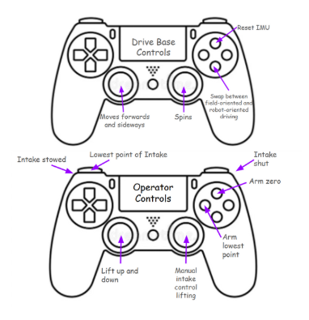

CyberBolts 2023-2024

Cyberbolts was the FTC team I was on in tenth grade. For the game, Centerstage, we went through an iterative design process. As a team member, I helped brainstorm an idea originally, which composed of an elevator handoff style system. However, with our team's robot breaking repeatedly throughout testing, we decided to redesign. Our new robot used a rotating arm without an elevator, which helped us be efficient in our scoring.
While waiting for the robot to be assembled, I brainstormed controls for the robot that would be simple yet have all the functionality needed. Once I got the robot, it was time to go to work. I was able to utilize the holonomic movement from our mecanum drive to link the controls to a joystick. I also used an imu to determine direction to get field centric driving as an option. Lastly was the arm itself. By using a PID with an encoder to handle the large amount of backlash in the arm, we got the arm to be able to go to set positions to drop the pieces during the driver controller period.


After the robot was able to move functionally through the drivers controls, I was able to create an auto that was able to capitalize on the high point potential there. However, the largest amount of points came from the ability to utilize vision in the robots. By using tensorflow, I was able to detect where a prop was located and place a hexagon tile on that line. By storing that location, I was able to place another tile underneath a specific april tag to get even more points.